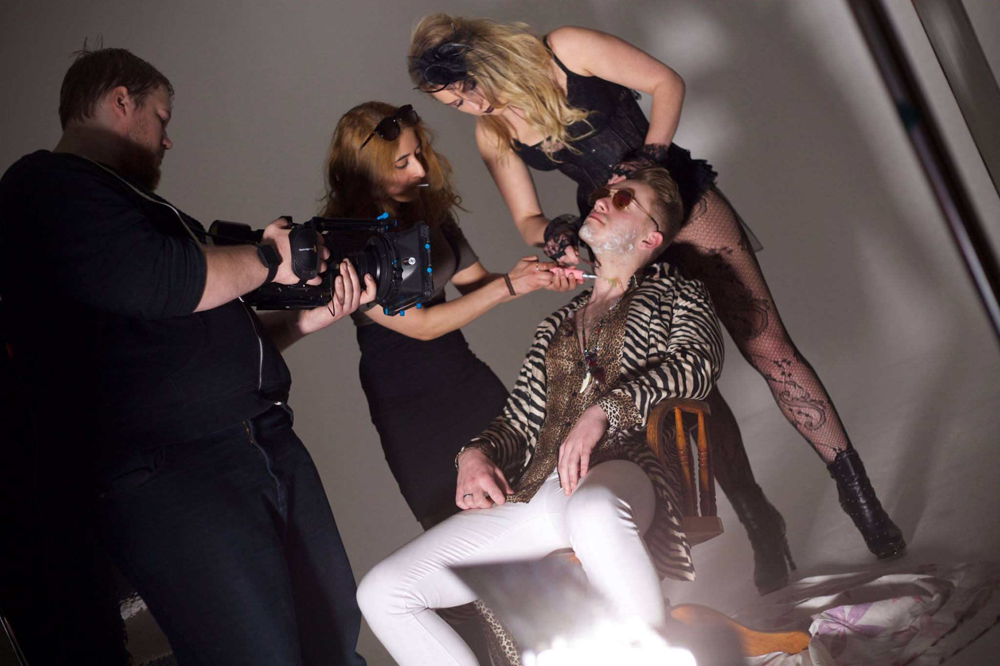
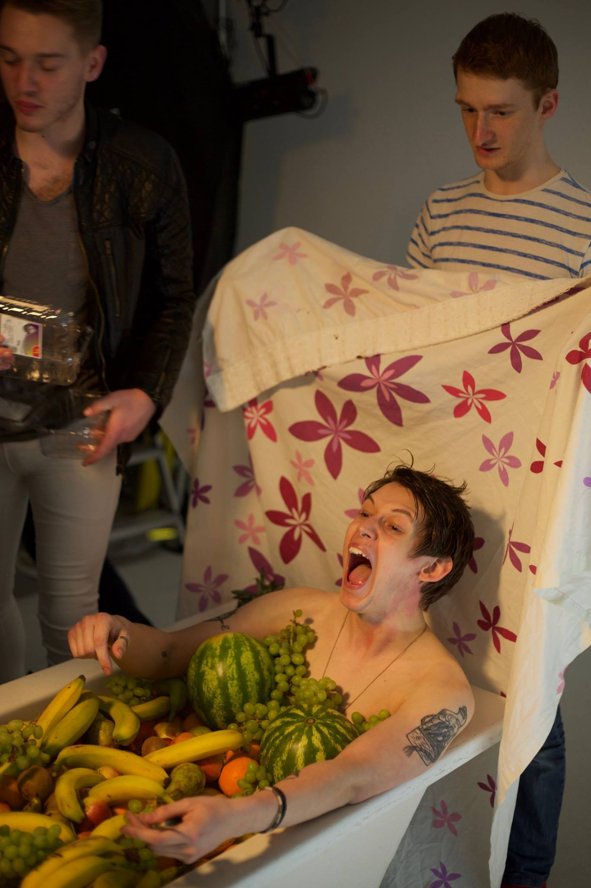
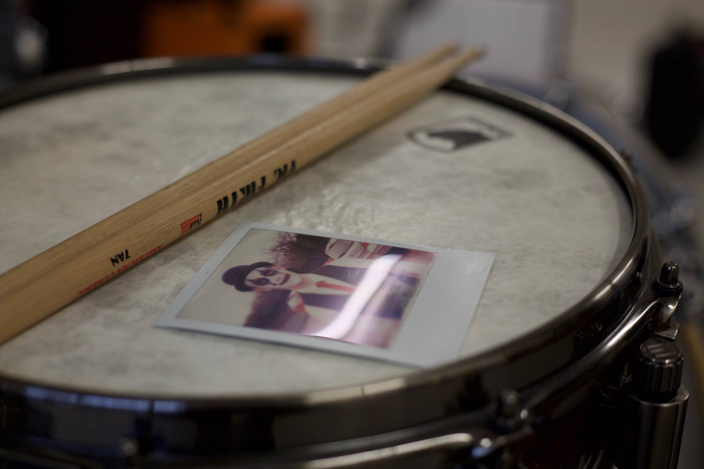
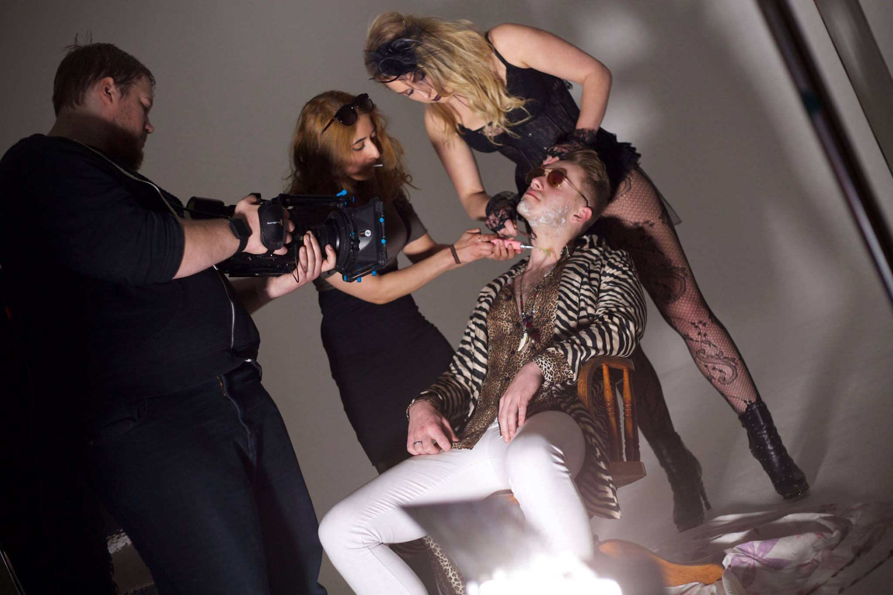
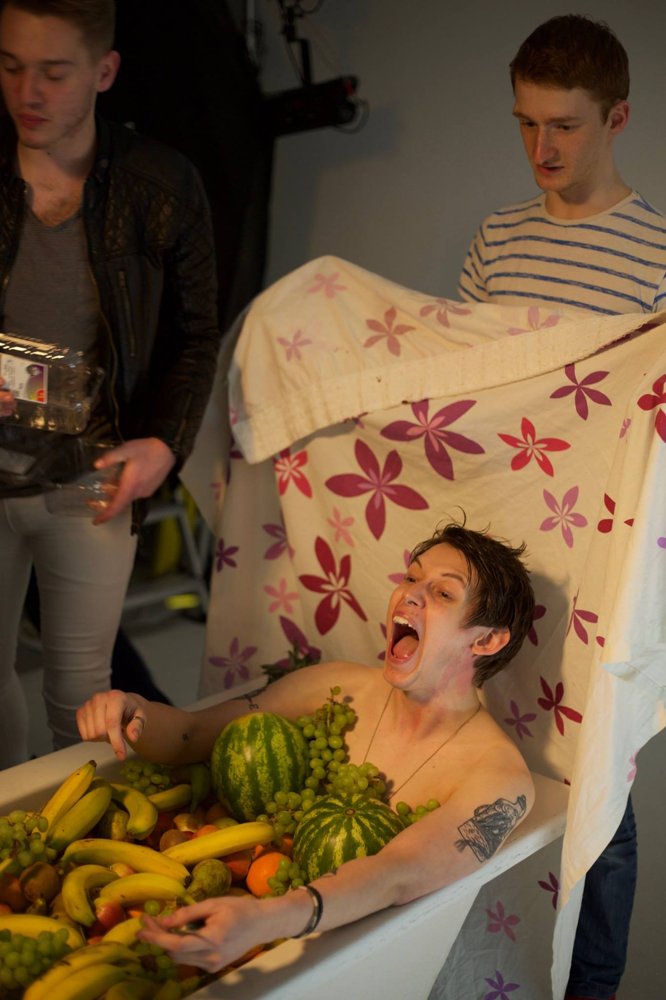
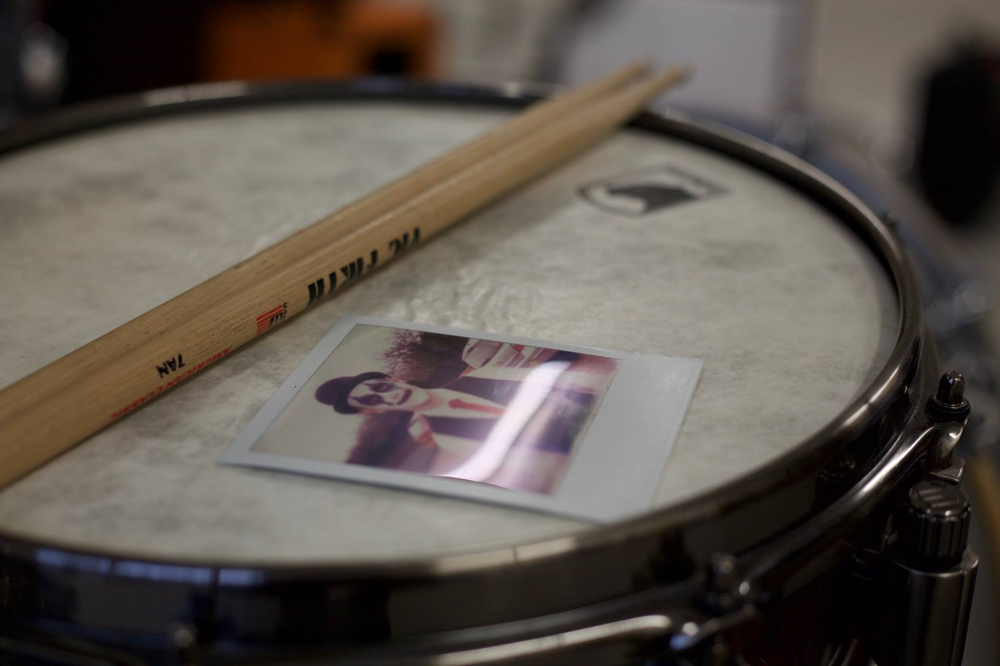

For The Girl - Where did time go?
Behind the video:
A bright, fun video, that let us really explore the band's light-hearted side, while also offering some interesting practical challenges at the same time! I'll get into those in a moment, but this was the first of a few videos that I worked on for this band, and for good reason. The band themselves were amazing to work with and remain great friends of mine today, the projects gave us creative freedom to do something interesting, and this video became a great marketing tool for the band around its release.
Does it have a meaning though?
It does! But this one is a little less obvious than some of my other work. Our director knew from the start that he wanted to show off the band's personality, and specifically their energy, in this video, and we thought that a great approach to doing this would be by poking fun at of the music videos being released at the time that were just set in a studio and filled with weird, 'astistic' props and scenarios. With the band's input, we developed our own weird 'artistic' scenes (like a clown photoshoot, or a romantic bathtub of fruit) and let each one descend into chaos as the video went on.
So what did you do in this one?
This wasn't quite as heavy on general design, and when the concepts for the scenes were put in place, they all sort of built themselves as props started rolling in. That's not to say I wasn't building and putting stuff together though (how could I resist?); beyond the usual set management and time keeping roles that I usually have, I also had to tackle a couple of strange effects.
How do you make someone bleed confetti?- Duct tape. Okay, duct tape and tubes. For this effect, quite a bit of tweaking and experimentation had to be done in the build-up to the shoot, and there's a surprising amount of nuance in getting this done. The tubes that we used couldn't be too thick, or the air pressure inside it would be far too low to give that spurting effect that we wanted. If they were too small though, the friction between bits of confetti in the tube would just block it immediately. We also wanted a stream of confetti, rather than one burst, which meant me building a feed-in system that would enter the main pipe, but not reduce air pressure and ruin the effect. The confetti too had to be of a certain material (not too heavy), of a certain size (too small and it doesn't look as nice, too big and the friction issue is back), and of the right colour to look good on screen. After a lot of testing and cutting up confetti, I attached my system to the band member through duct tape (yes, we ripped it off) and away we went!
How do you make someone throw-up bubbles?This one left a bad taste in my mouth, and that bad taste was soap. So you know those little bubble wands that you get that you dip in soap water and blow a bubble with? Imagine that, but super tiny. You get a tiny bubble right? We want hundreds of these, so we needed a mesh of hundreds of little circles. Luckily, most thick fabrics are pretty much perfect for this. Tie this onto a solid plastic hoop, dip in soap water (my recipe for this has sadly been lost), add a few drops of food colouring for variety, place in your mouth and, with a bit of acting and directed breathing, you're throwing up bubbles! It tastes... Awful, but it works.
Behind-the-scenes Photographs
 




